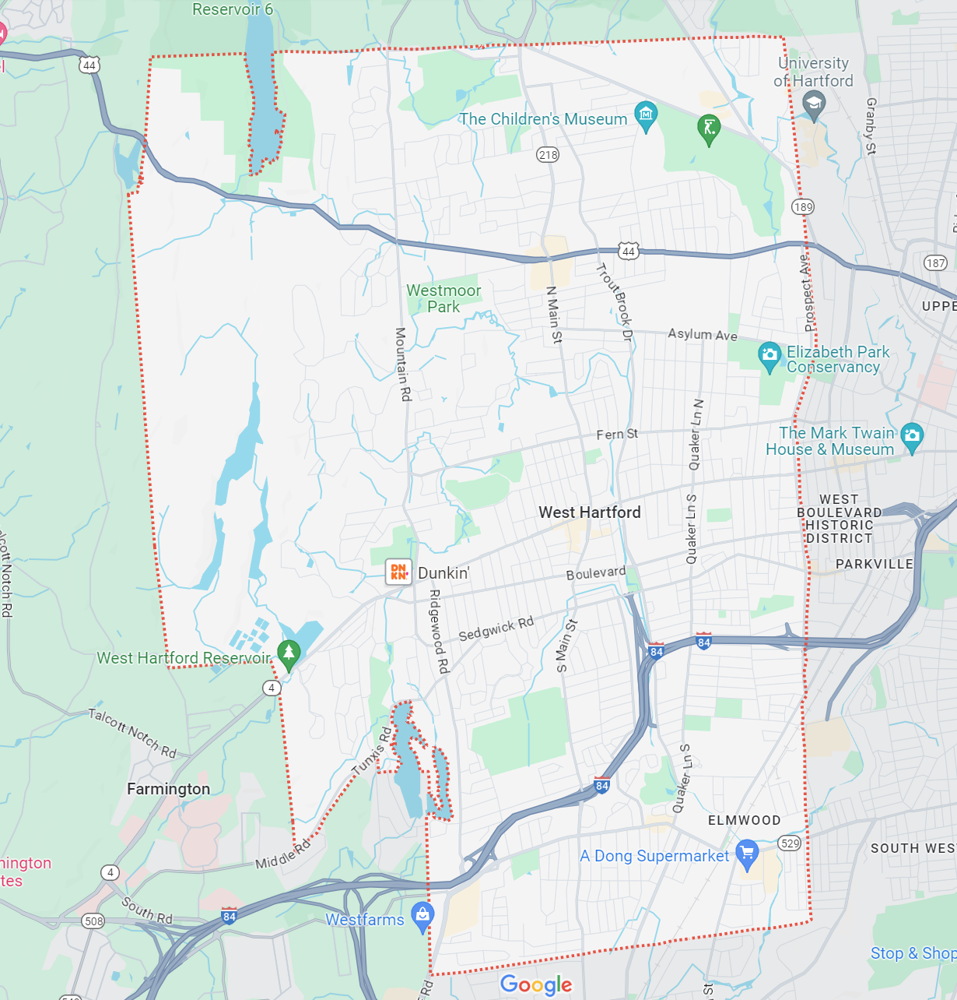

Check out all we have to offer:
History
-- The rich history of our beautiful city --
Food
-- Delicious places to try --
Schools
-- Excellent education opportunities --
Points of Interest
-- Explore our great town --
Interesting Facts
-- Interesting info about our town --
Works Cited
-- Sources used for this site. --
Map

This is a map of West Hartford, with Hartford on the right side and Farmington on the left.